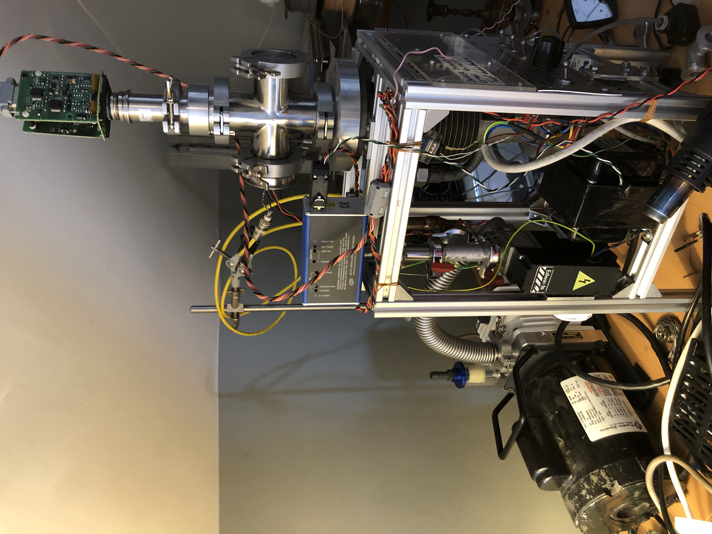

Vacuum System
I have wanted to have a high vacuum chamber for a long time and at the begining of the summer, I finally found a diffusion pump for sale - its a Metropolitan Vickers 2" air cooled pump, from about half way throuhg the 20th century. The heater was burned out but it used a "band" type heater, readily available on AliExpress. I installed a very simple thermostat on the pump comprising a 100k NTC thermistor, a SSR and an Arduino Uno (don't judge me!).
I mounted the pump in a frame of aluminium extrusion re-used from my second 3D printer, and installed a large mains-powered fan from some ancient computer. The datasheet for the pump is lost to history so I have no idea what specifications it requires in its fan, but this one managed to keep the top of the pump cool to the touch in opperation.
On the roughing side, I used soldered copper pipes to adapt the strange imperial thread exhaust of the pump to KF10, which connects to a tee with an isolation valve and a range-exteded pirani gauge from ebay. This setup is pictured below.
The inlet flange was naturally not standard either. The pump had no baffle so I machined a large adapter which adapted the inlet to KF40 and had space inside for a "halo" type baffle.
Finally, this could be connected to commercially available (ie. second had from ebay) KF40 hardware. I bought a cross to use as a chamber. This is shown in the image below. Also shown is the roughing pump, the home-made pump-inlet-to-KF40 and KF40-to-KF25 adapters, the control pannel, a Bayard-Alpert gauge which doesn't work, and my desk clutter. 
So, does it work?
Kind of. The base pressure of the rotary vane pump is about 10mTorr and when the diffusion pump is turned on, the chamber pressure drops to about 0.01mTorr. This is pretty bad for a diffusion pump. Exchanging the fluid makes no difference so I suspect a leak is the likely cause. I will try to solve this problem but in the meantime, is just barely good enough for what I want it for.
September 2024